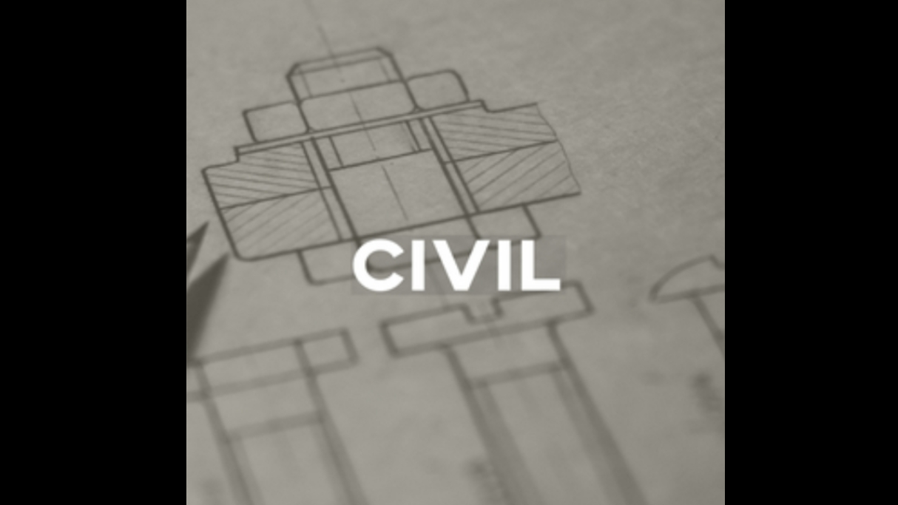

Our on-campus laboratories include:
-
heavy structures
-
geotechnics and materials
-
climate controlled bi-axial material testing
-
environmental engineering including microbiology and pilot-scale laboratories
-
driving simulator
-
hydraulics and hydrology
We also have facilities based in the city and across the north of England that allow us to study full scale, real world science, and engineering as it happens. These facilities include:
-
flood defence schemes
-
an instrumented river catchment system on the River Eden
-
Geometry: a hydro-borehole facility
-
electric vehicles